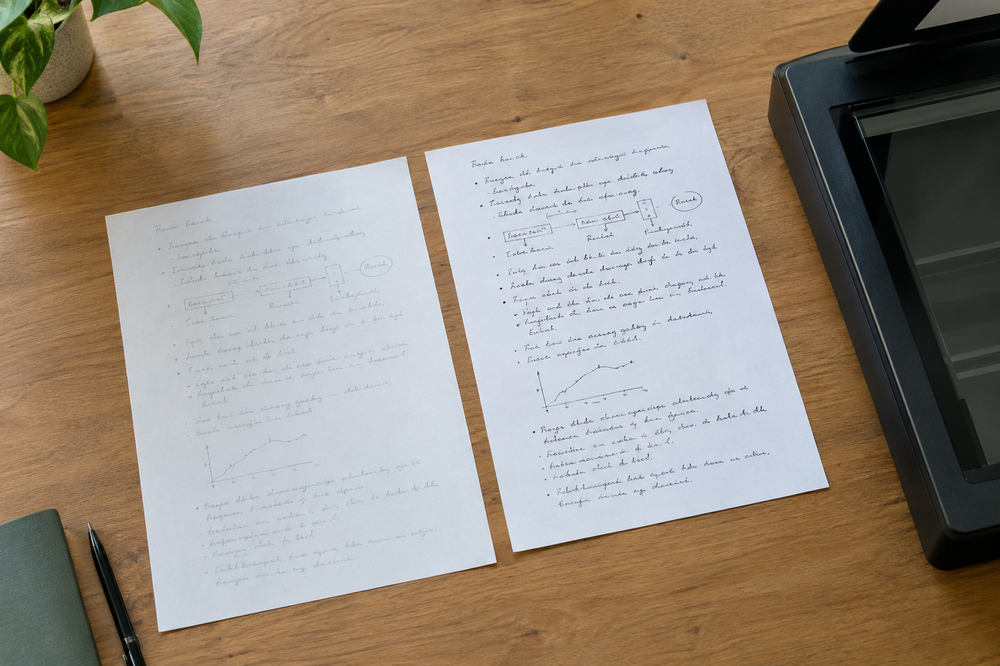

扫描太黑还是太浅？重庆手写材料对比中的灰度问题
同一张手写纸换两种扫描设置，笔画的粗细可能看起来不同。

对比先看原始图
重庆模仿笔迹资料常经手机拍照、聊天软件转发，再变成打印件。每一步都可能损失浅色线条。开始比较之前，先找最接近原件的照片或扫描文件。
灰度影响哪些细节
过高对比度会把笔锋边缘变硬，过低又让细小的收笔消失。模仿签名、模仿签字若只剩二值黑白图，连笔处容易粘成一块。可以保留彩色原图作为对照，再另做便于阅读的副本。
记录图像版本
笔迹鉴定需要知道哪张是原件照片、哪张是复印扫描。给文件标注来源与处理方式，比反复调滤镜更重要；不同版本不要以同一个文件名互相覆盖。